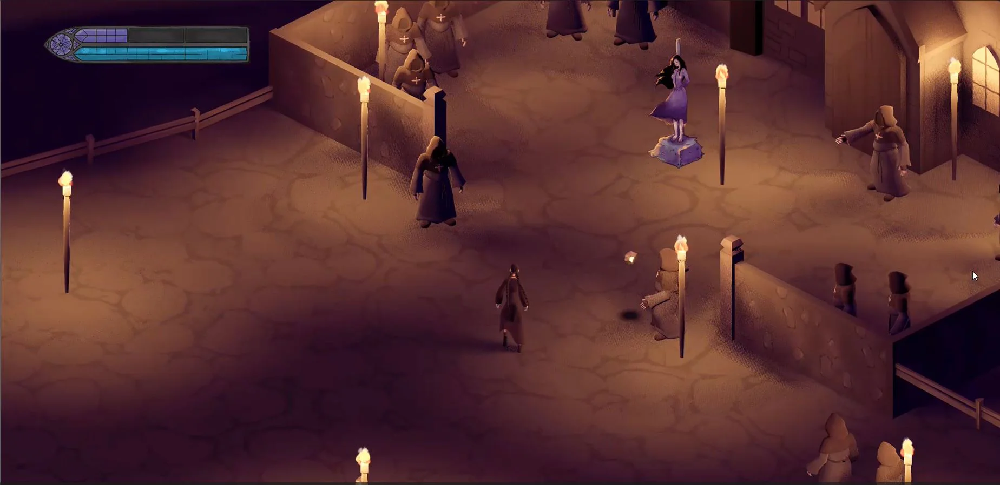

Before The
Sun Rises
Before the Sun Rises is a bullet hell style game set during the medieval witch hunts. Your sister, a presumed witch, was taken from her bed during the night and set to be burned at the stake. It is up to you to move and dash to your sister Bridgid, evading the mob as they try to stone you on your path.
I developed this game with Natasha Spinelli. We followed Situational Game Design theory to ideate and develop the game over the course of 4 weeks. I was responsible for the programming while she handled asset creation. We collaborated on the game and narrative design. All the visual assets in the game are 100% original.
Play HereTools
Godot, GD Script, Maya, Substance Painter
We wanted to do an action game inspired by some of our favorite Hack and Slash games. We thought an Isometric style was the most achievable style of such a game, but we narrowed the scope of the game to focus on movement and dodging give to the feeling of thrill without a full combat system.
This project taught me the importance of clear communication and understanding the full 3D asset integration pipeline by working directly with a 3D artist.